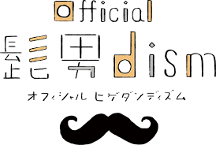
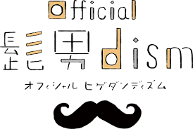

髭男の魅力は大きく分けて２つあると考える。
まず１つ目は耳に残るという点だ。これは高音を綺麗に歌い上げることや曲調、リズム、韻を踏むなどのことからきていると考えられ、またメンバーの演奏技術の高さからも来ていると考えられる。
二つ目は、歌詞の独筑な表現という点だ。
「Pretender」では、「もっと違う設定で もっと違う関係で 出会える世界線 選べたらよかった」と切ない恋を表現し、「宿命」では「奇跡じゃなくていい 美しくなくていい 生きがいってやつがひかりかがやくから 切れないバッテリー 魂の限り 宿命ってやつを燃やして あばれだすだけなんだ」と高校野球の泥臭さや電池のバッテリーと野球のバッテリーをうまく掛け合わせるなど独特の歌詞とメロディーで聞く人の耳に残るようになっている。